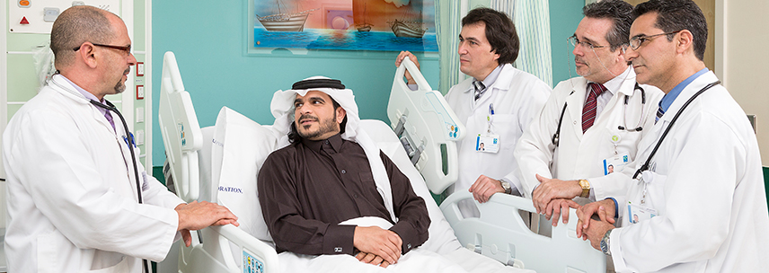

الرعايه الصحيه
الرعاية الصحية الأولية هي نهج للصحة والرفاهة يتمحور حول احتياجات وظروف الأفراد والأسر والمجتمعات المحلية. وهي تتناول الصحة والرفاهة بجوانبهما البدنية والنفسية والاجتماعية الشاملة والمترابطة.
وجوهرها هو توفير الرعاية للشخص ككل فيما يخصّ الاحتياجات الصحية طوال الحياة، وليس مجرد علاج مجموعة من الأمراض المحدّدة. وتضمن الرعاية الصحية الأولية حصول الأشخاص على رعاية شاملة، تتراوح بين الإرشاد والوقاية إلى العلاج وإعادة التأهيل والرعاية الملطِّفة كأقرب ما يمكن إلى بيئة الناس اليومية.
خدمات رعاية المرضي

تعتبر هذه الإدارة من أكثر الإدارات نشاطأً وديناميكية برئاسة مدير خدمات رعاية المرضى، وبمعاونة عدد من مشرفي التمريض و ما يقرب من 432 ممرض وممرضة. وتقدم الإدارة خدماتها داخل الأجنحة والعيادات الخارجية 24 ساعة يومياً على مدار الأسبوع
شركة التجهيزات الغذائية دايت كير
دايت كير هي إحدى الشركات الرائدة في صناعة المواد الغذائية في الكويت ومنطقة الخليج التي تدعم الحياة الصحية لعملائها من خلال كونها مورداً للوجبات الغذائية ذات الجودة العالية والصحية والمغذية ومصدراً من المصادر الموثوق بها للمعلومات والنصائح الغذائية
الطوارئ العامة
الخدمات الطبية في قسم الطوارىء متوفرةعلى مدار 24 ساعة و تشمل علاج الحالات الخطرة مثل الأزمات القلبية, مروراً بحالات البرد الشديد و حوادث الطرق و غيرها.
و لهذا السبب يمكن تصنيف " الرعاية الطارئة" إلى حالات الطوارىء الفعلية و الحالات الأخرى الحرجة, و بغض النظر عن ذلك فإن قسم الطوارىء بمستشفى السلام الدولي على أتم الاستعداد لتلبية احتياجاتك أنت و عائلتك, و هي مجهزة بكادر طبي ممتاز قادر على مواجهة أي صعوبات أو مشكلات طارئة.
مواعيد العمل : 24 ساعة يومياً